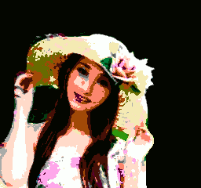
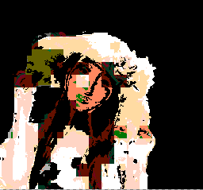
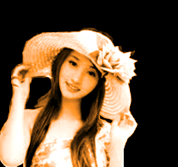
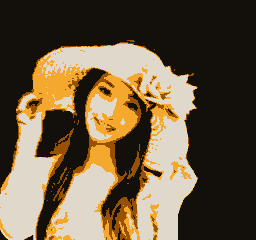
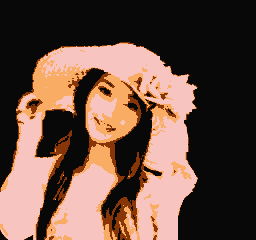

04、完整的背景
制作一张全屏显示的背景图
(备注：这里的RLE是作者将图片变成NES可以识别加载的贴图，这么搞太难翻译了。。。)
NES Screen Tool
http://www.romhacking.net/utilities/802/
我写了另一篇关于将BMP文件导入NES Screen Tool的博客页面。这里…
https://nesdoug.com/2017/04/22/nes-screen-tool-bmp-import/
（后面我再花时间翻译了放在这篇文章最后，BMP变贴图）
rl3.chr），并且我已将我的NES屏幕工具（.nss）文件保存为压缩的rle文件，“Nametable / Save Nametable和Attributes / RLE打包为C头.h”。现在我们可以将它导入C代码，并将其打印到后台。
完整名称表是1024字节。我们不能在屏幕打开的情况下执行此操作，因此将其关闭，然后设置起始地址，并调用rle函数。
ppu_off();
vram_adr(NAMETABLE_A);
vram_unrle(Girl3);
ppu_on_all();
到目前为止，我忘了提到调色板。我不得不改变它以使它成为棕色阴影。我稍后会更详细地讨论这个问题。pal_bg() 设置背景的调色板。
https://github.com/nesdoug/04_FullBG/blob/master/fullBG.c
https://github.com/nesdoug/04_FullBG
通过neslib我们可以很容易改变屏幕的亮度，你可以使用pal_bright()，数值范围 0-8 （对应 黑-白）4是正常
我借用了Shiru的“Chase”游戏中的一个功能，这功能很简单实用。
pal_fade_to(0,4); // 黑色渐变到正常色
pal_fade_to(4,0); // 从正常色渐变到黑色
如果你运行fade.nes文件，你会看到它在无限循环中淡入淡出。淡入淡出可用于过渡，例如从标题到游戏，或从一个级别到另一个级别。
https://github.com/nesdoug/05_Fade/blob/master/fade.c
https://github.com/nesdoug/05_Fade
NES屏幕工具BMP导入
最新版本的NES Screen Tool改进了BMP导入功能。我打算试一试。BMP必须是16色或256色。我认为16色效果更好。
我在互联网上找到了这张图片。我将图像缩小为256×240。
使用GIMP，我调节了饱和度，让他不会失真。
我第一次尝试是将背景变暗，然后转换为NES颜色（我之前使用NES调色板制作了一个自定义调色板）。然后，图像/模式/索引，并选择NES调色板。然后我的图像/模式/ RBG。然后我图像/模式/索引，优化到16色。这是我们的......

然后，我导入了NES Screen Tool，只检查了“失真”。这就是我得到的。

嗯，效果很差，那就重来一次，调整分辨率大小到 256x240,锐化处理，背景调黑。
图像/模式/灰度，然后是图像/模式/ RGB。然后我选择了铅笔工具（或画笔），并将其模式更改为“颜色”并选择了橙色，然后像双色调一样重新着色灰色图像。（我也再次调整了水平）。

现在...图像/模式/索引，选择NES调色板。图像/模式/ RGB。图像/模式/索引，针对4色进行了优化。图像/模式/ RGB。图像/模式/索引，针对16色优化。（如果你有最终的16种颜色，NES Screen Tool似乎会做得更好）。

这就是GIMP中最终版本的样子。让我们再次从NES Screen Tool导入BMP（仅检查'失真'）......（我在NES Screen Tool中修改了一些图块）。

好多了。
下次我要将它作为背景导入，压缩为RLE文件。